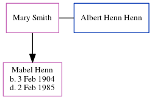

Mary Henn (née Smith)
| [ Calendar ] | [ Surnames Index ] | [ Census Index ] | [ Family History ]Mary Smith and had 1 child with Albert Henn Henn: Mabel.
Children
- Mabel was born on Feb 3, 1904
Family Tree
Generated by ged2site. Last updated on Jun 13, 2024